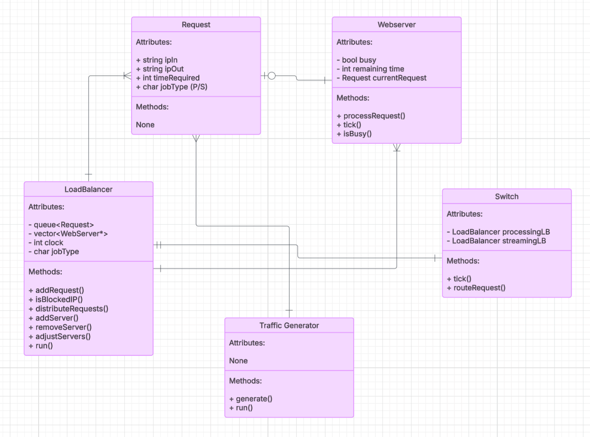

William Stone
This project simulates a real-world load balancer responsible for distributing web requests across multiple web servers. The system dynamically adjusts the number of servers to prevent overload and underutilization.

The system is composed of five primary components: Request, WebServer, LoadBalancer, Traffic Generator, and optionally Switch.
A Request struct stores the inbound IP address, outbound IP address, processing time (clock cycles), and job type (Processing or Streaming).
The WebServer class handles individual request processing. Each server can be idle or busy. When assigned a request, it processes it for the specified number of cycles.
The LoadBalancer class manages a queue of requests and a dynamic list of web servers. It distributes jobs to available servers and dynamically adds or removes servers depending on queue size thresholds (50–80 times the number of servers).
The TrafficGenerator class generates random requests and adds them to the request queue of a LoadBalancer.
The optional Switch class routes requests based on job type, enabling separation of streaming and processing traffic.